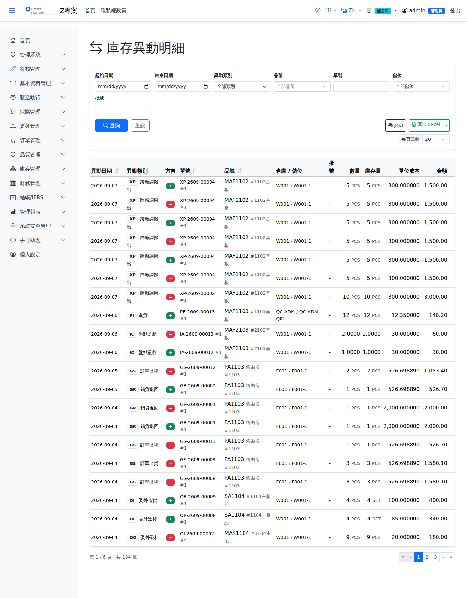

庫存異動明細Stock Movements
路由：/StockMovement | 所有進出異動流水Route: /StockMovement | All stock movements
全部庫存異動的流水查詢：異動類型、來源單號、數量、單位成本與異動日，任何庫存疑義由此追溯到原始單據。A running enquiry over every stock movement — type, source document, quantity, unit cost and date — so any stock question can be traced back to the original document.

庫存異動查詢畫面截圖（示意，實際欄位/資料依權限與查詢條件而異）Stock movement enquiry screenshot (illustrative; actual fields and data vary by permission and query criteria)
查詢Search
1
查詢列輸入條件後點「查詢」；欄位標題可點擊排序，清單下方有分頁導航。Enter your criteria on the query bar and click "Search"; column headers can be clicked to sort, and the paging controls sit below the list.
2
可依品號、異動類型、來源單號、日期區間篩選；可列印。Can be filtered by product, transaction type, source document and date range; printable.
欄位說明Field reference
查詢條件Query criteria
| 條件Condition | 說明Guide |
|---|---|
| 起始日期 / 結束日期Date from / Date to | 異動日期區間Movement date range |
| 異動類別Category | 庫存異動類別（進貨、發料、繳庫、調撥、報廢等），由庫存異動類別主檔維護Type of stock movement (receipt, issue, put-away, transfer, scrap …), maintained in the inventory transaction type master |
| 品號 / 單號 / 儲位 / 批號Product / Doc No / Location / Lot | 各自縮小查詢範圍；單號可回溯來源單據Each narrows the query; a document number leads back to the source document |
清單欄位List columns
| 欄位Field | 說明Guide |
|---|---|
| 異動日期Date | 該筆庫存異動實際生效的時間When the stock movement actually took effect |
| 異動類別Category | 異動的業務性質，決定會計科目與方向Business nature of the movement, which decides the account and the direction |
| 方向Direction | 入庫（＋）或出庫（－）In (+) or out (−) |
| 單號Doc No | 造成此次異動的來源單據號碼Number of the source document that caused this movement |
| 品號Item | 異動的料件Item moved |
| 倉庫 / 儲位WH / Location | 異動發生的位置Location where the movement occurred |
| 批號Lot | 批號管制品的批次Lot of a lot-controlled item |
| 數量Count | 本次異動的數量（依方向增減庫存）Quantity of this movement (increases or decreases stock by direction) |
| 庫存量Stock Qty | 本次異動後的結存數量，用於追溯任一時點的庫存Balance after this movement, used to trace the stock at any point in time |
| 單位成本Unit Cost | 本次異動採用的單位成本；出庫時為凍結的當時 AVCOUnit cost used for this movement; on issue it is the AVCO frozen at that moment |
| 金額Amount | 數量 × 單位成本，即本次異動的存貨金額變動Quantity × unit cost, i.e. the change in inventory value from this movement |